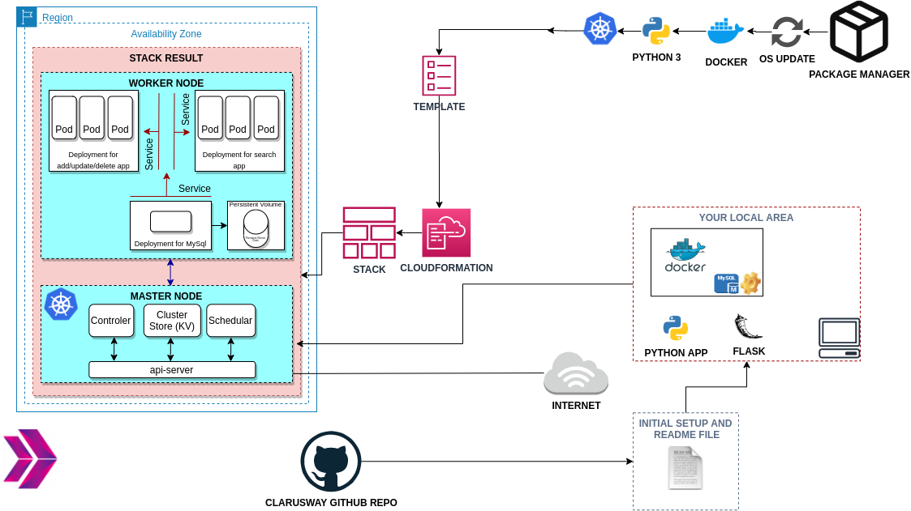

Jenkins-Pipeline für Telefonbuch-Anwendung

Dieses Projekt zielt darauf ab, eine Jenkins-Pipeline zu erstellen, um die Telefonbuch-Webanwendung mit Docker Swarm auf Elastic Compute Cloud (EC2) Instanzen bereitzustellen, indem die App-Images aus dem AWS Elastic Container Registry (ECR) Repository gezogen werden.
Dockerisierung einer Bookstore Web API

Die Bookstore Web API Application zielt darauf ab, einen Bookstore-Webservice mit Docker zu erstellen. Der Anwendungscode soll als RESTful-Webservice mit Flask unter Verwendung von Dockerfile und Docker Compose auf einer AWS Elastic Compute Cloud (EC2) Instanz mit dem AWS Cloudformation Service bereitgestellt werden.
Microservice-Architektur für Telefonbuch-Anwendung

Die Phonebook Microservice Web Application zielt darauf ab, eine Webanwendung mit einer MySQL-Datenbank unter Verwendung von Docker und Kubernetes zu erstellen, um den Studierenden ein Verständnis der Microservice-Architektur zu vermitteln. In dieser Anwendung haben wir einen Frontend-Service und einen Backend-Service, um mit dem Datenbank-Service zu interagieren. Jeder Service wird von einem Kubernetes-Deployment verwaltet. Der Backend-Service wird als Gateway für die Anwendung dienen und die notwendigen Webseiten für Erstellungs-, Lösch- und Aktualisierungsvorgänge bereitstellen, während der Frontend-Service eine Suchseite für Lesevorgänge bereitstellt. Um die Daten in der Datenbank zu erhalten, sollten Konzepte von Persistent Volume und Persistent Volume Claim angewendet werden.